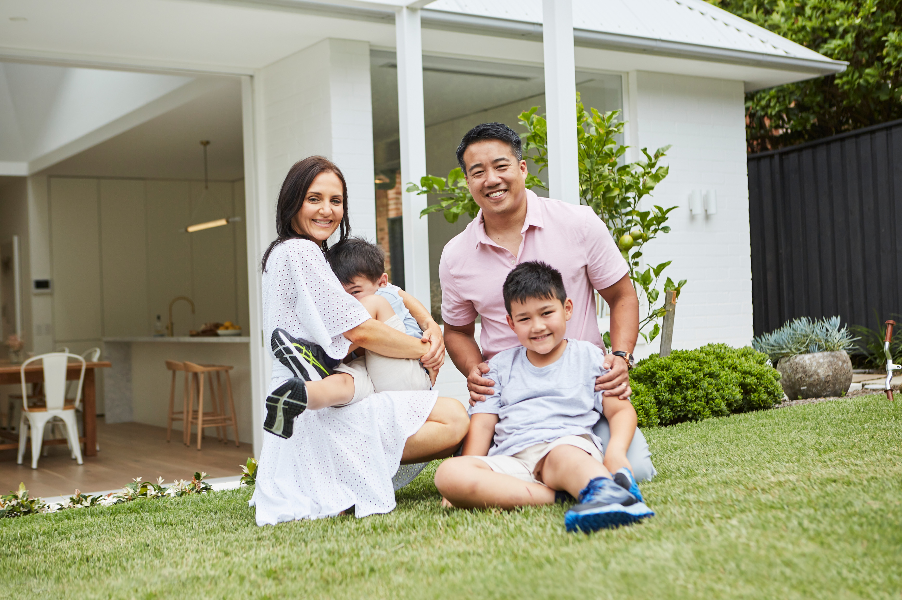
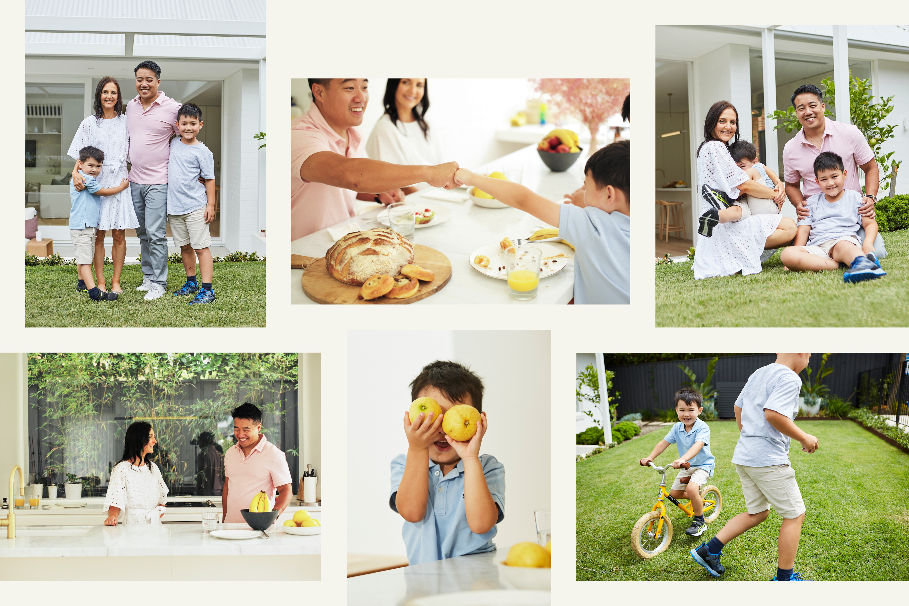
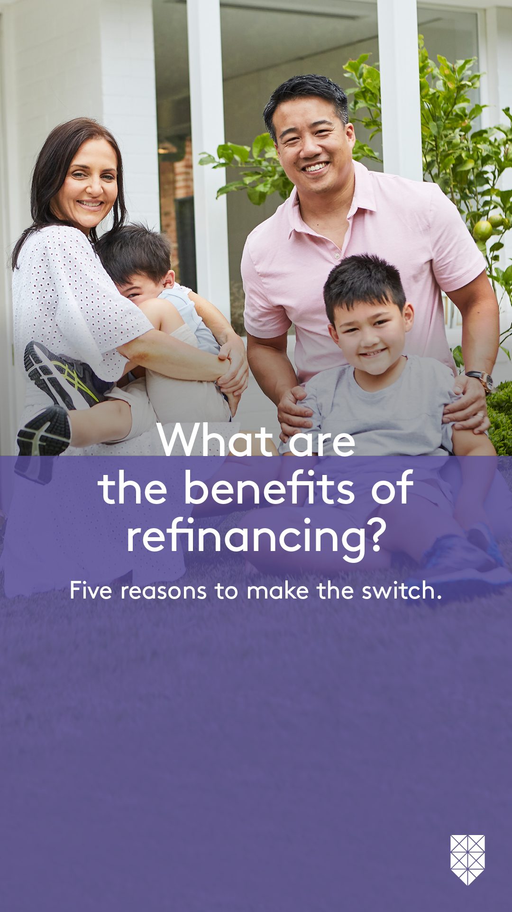
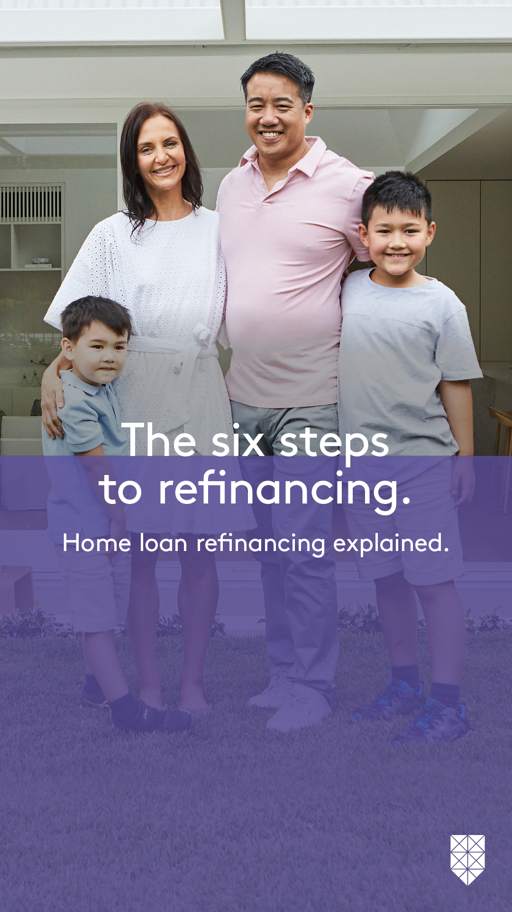
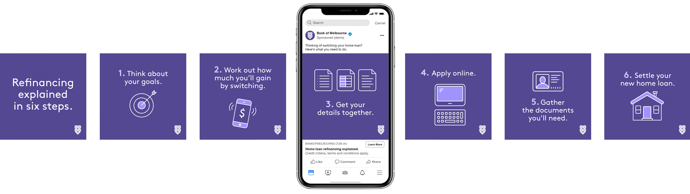
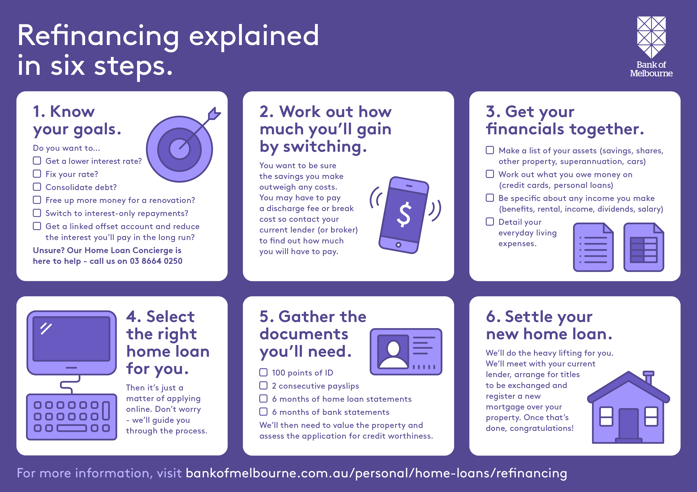
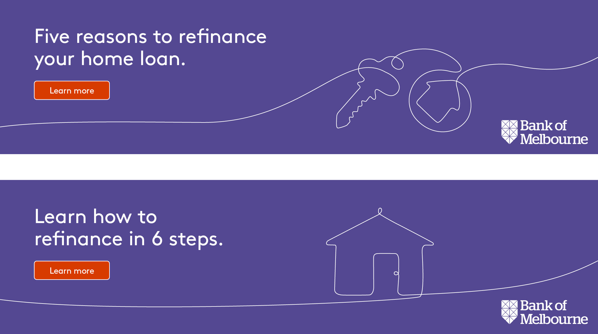

Making refinancing simple
Bank of Melbourne
This was a bespoke Medium Rare campaign that used the same content across three national banks — St.George, BankSA and Bank of Melbourne. The concept ran across multiple channels and was adapted for each bank. I was Creative Director across every stage, from talent and location selection to on-set direction and the production of hundreds of digital and social assets.
Shoot imagery

Facebook social amplification


Instagram carousel explainer

Infographic explainer

Instagram video
Digital banner ads
